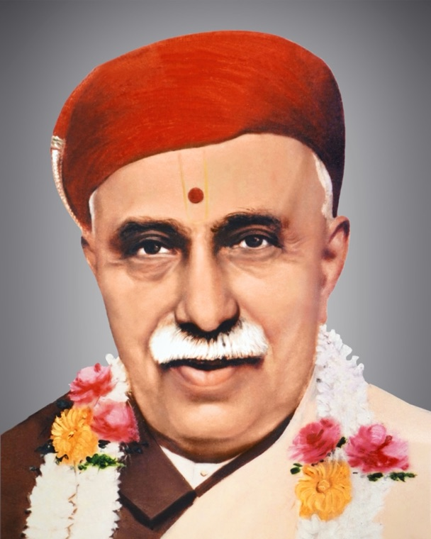

શ્રી સ્વામિનારાયણો વિજયતેતરામ્
સત્સંગ ગ્રંથાલય
Satsang Library
Religious texts of Bhagwan Shri Swaminarayan's sampradaya, in one place. The Vachanamrut and the Vachanamrut Nondh can be searched and read on this site. The other books open as the original PDFs, to read in the browser or download.

Harikrishna Maharaj photo: Swaminarayan Sampraday, Wikimedia Commons, CC BY-SA 3.0 (cropped)